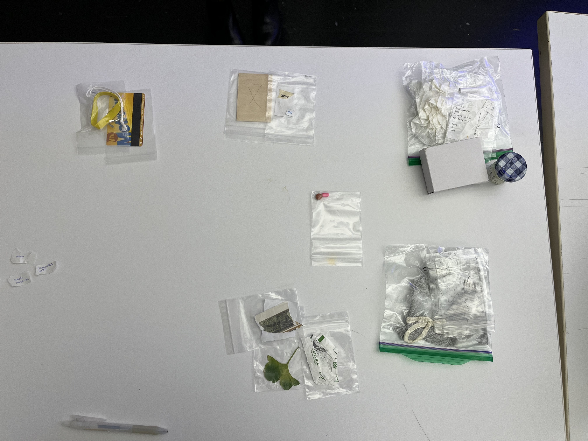
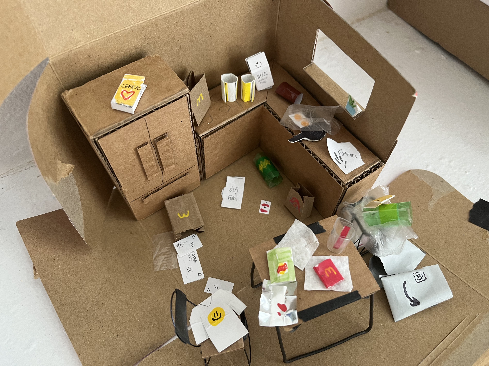
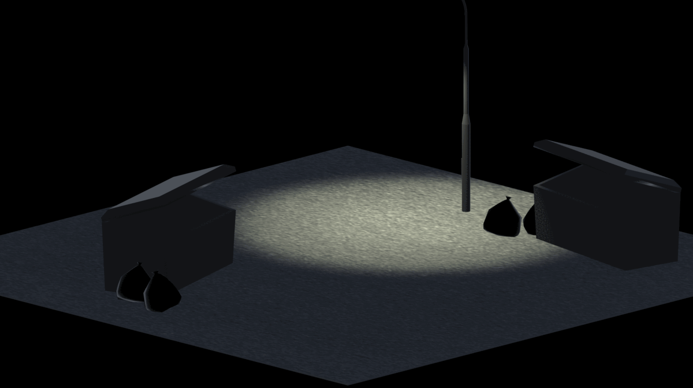
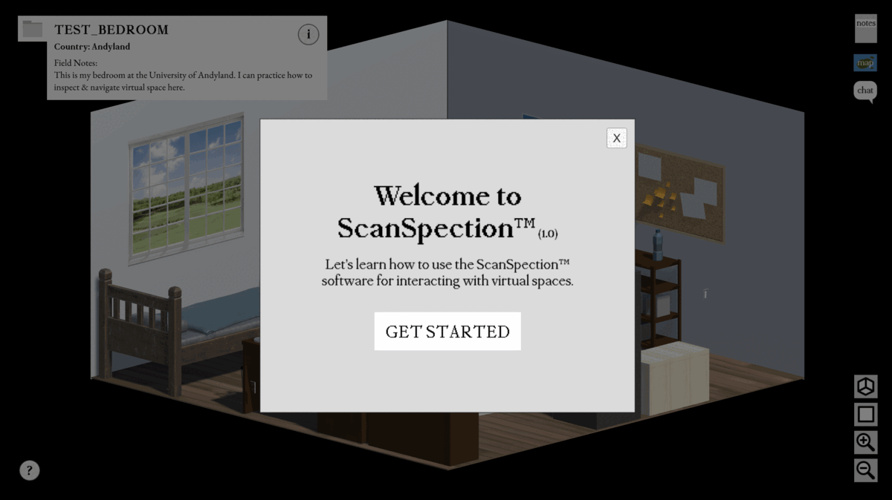
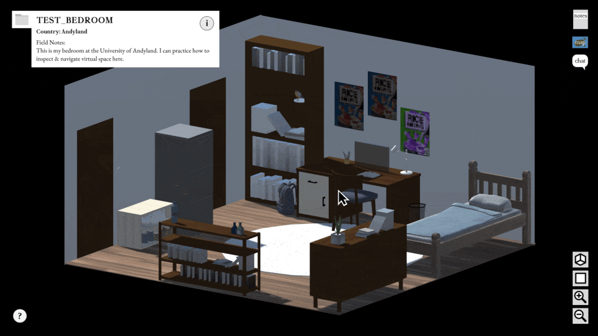
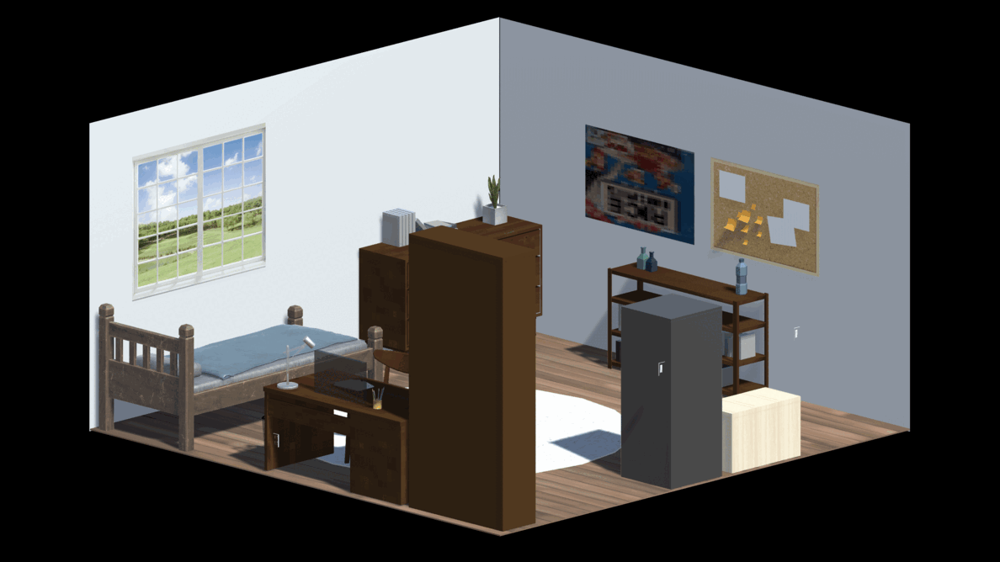
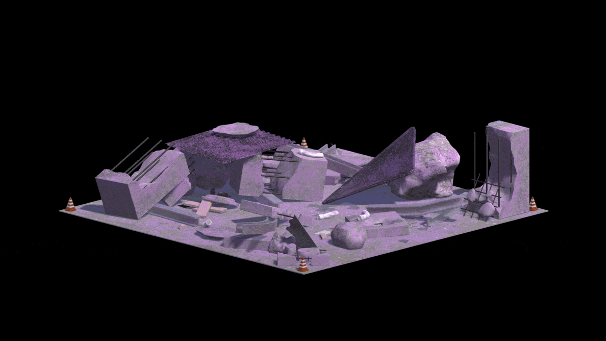
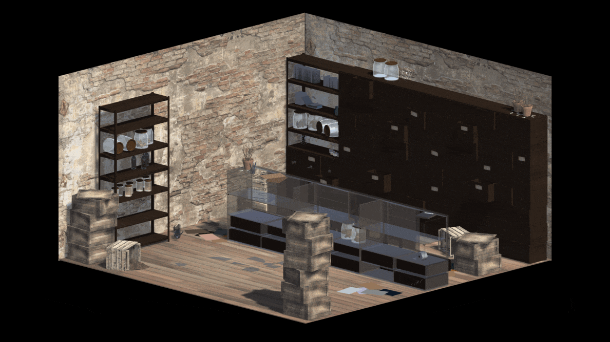
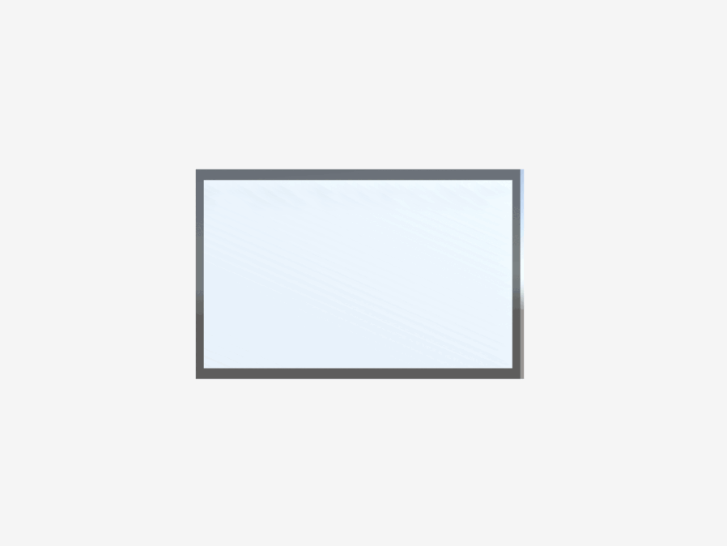

The Artifex is a game about discovery, exploration, and mystery, exploring how objects, specifically trash, can be used to tell a story. You play as a researcher working for a professor at a university, tasked with inspecting waste and artifacts from ruined lands. The player’s goal is to uncover lost or obscured narratives through the examination of these discovered artifacts, things that have been left behind.
Often overlooked and considered as something gross, trash, waste, garbage, remains, leftovers—whatever you want to call it—is actually a lot more interesting than one would think. Rather than a type of object, “trash” can be more accurately thought of as a description of the state of an object. Before becoming “trash”, things always embody a different identity. And so instead of thinking about trash as just “trash”, trash becomes something that’s no longer wanted or needed, something that’s been left behind, discarded or removed. In telling a story, whats’s not there is just as important as what is. This isn’t a new concept or perspective. Garbage and remains are key components in the work of archaeologists, acting as important tools for understanding how people lived and how societies functioned.
I started off with just one thought. “I like trash”. My first goal was to figure out what to do with that. Throughout the entirety of the the first semester, I dedicated myself to finding a resolution for this. I ended up meandering around quite a bit testing possibilities with my prototypes.
Prototypes
[Prototpye 1: What is trash?]
I set up different types of "leftovers" and asked classmates to sort them however they saw fit. I deliberately included vague items. I wanted to get a sense of how different people might percieve "trash", and what factors influenced whether or not something would be considered "trash". Almost everyone determined a division between "trash" and "not trash" based on usefulness of the item, both immediate and future usefulness.

[Prototype 2: Trash in Context]
In my second prototype I wanted to test how "trash" might be understood in the context of a space or scene, in comparison my first prototype where the items were isolated. I constructed a small room filled with "trash" items and asked classmates to come up with a story of who lived here and what may have happened.
Lots of discourse came up around what actually happened in the space. (did this person have a dog or were they eating dog food? is the plant in the window real or fake?)
Spacial context turned out to be a major factor in how the objects are percieved.

[Prototype 3: interactions]
For my final prototype of the semester, I wanted to finally make a decision on what medium I was actually going to move forward with. I was doing a lot of back and forth between physical and digital experiences as I didn't want to sacrifice the tangible qualities of "waste" items. I eventually decided on making a Unity game to be able to more realistically create a participatory experience, rather than an observatory experience. I attempted to translate ideas from my previous prototypes into a digital game space through this iteration as well.

Gameplay

instructions
One thing I struggled with was the balance between expository storytelling and environmental storytelling. Because I started off with a narrative in writing, I was inclined to include the text in the game directly.

notebook interactions
To emphasize the importance of the artifacts and hint at the conspiracy, I wanted my game to involve discovery, learning, and putting a story together, specifically through interacting with objects. In gameplay, that translated to collecting information via collecting artifacts.

Your Room

Factory Explosion Site

Aria's ApothecaryTabCorp Administrative Office

artifacts
Influences & Precedents
Heaven's Vault ↗ Heaven's Vault is a game about archaeology. You play as an archaeologist tracking down a colleage by retracing his research, learning about and experiencing the world through research and investigation in the field.
Through playing this game, I learned a lot about how investigation could be translated to a play experience. Ernesto put me on to this game, thank you for the reccomendation.
Papers, Please ↗
I found myself frequently referencing Papers, Please for how to convey the narrative in my game. I noticed I tended to either overexplain via exposition, or not tell enough of the story. I thought the worldbuilding in Papers, Please was done super well, especially in the introductory cutscene, and so I tried to accomplish something similar in how I introduced the world.
Unpacking ↗
I was inspired by the visual presentation of the space and objects in Unpacking. I thought the isometric perspective was a really unique way to view a space, getting a zoomed out, overhead, and almost "detached" view; a simple but effective way to view a space without needing to be "inside" it. I took it a bit further by allowing players to rotate and pan the camera around the space.Rather than reorienting your body/a character to explore the space, you can reorient the space itself. I initially was drawn to this due to technical limitations of not being able to make an open world game, and ended up building a lot of the story around this specific aspect.
Reflection
I think what I have complete now is just the start of this project. I spent a big chunk of the year developing what my project was actually going to be, leaving me with not as much time to actually make the thing. I see what I have now as the real proof of concept for more to come in the future. There's still a lof of this story I haven't been able to flesh out yet.